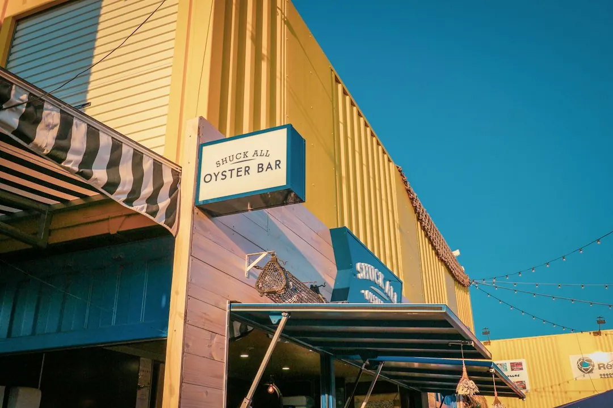

Roller door repair costs in Brisbane are listed at about $90 to $310 for minor repairs, depending on the fault and parts required. The practical first step is to describe the door style, suburb, access problem and visible fault. Roller Doors Brisbane lists repair paths for jammed or noisy doors, opener faults, broken springs, remotes, off-track doors, cables and rollers, plus urgent failures. A specialist checks whether repair, parts replacement or a new door is the sensible next step.
For homeowners comparing roller door repairs brisbane options, the useful questions are what failed, whether the fault is mechanical or electrical, and whether repair remains sensible for the door.
Roller Door Repairs Brisbane Explained
The Roller Doors Brisbane service information separates a jammed curtain from an opener fault, a broken spring, a remote problem and an off-track door. That distinction matters when requesting a quote because each fault points to different parts, testing and labour. A useful enquiry names the door style, suburb, whether the door is stuck open or shut, and what changed immediately before the problem.
Describe the symptom in ordinary language: noisy tracks, a door that sticks, a motor that will not respond, a remote that no longer works, or a curtain that has jumped its guides. The published process says a specialist checks whether the issue is mechanical, opener-related or electrical before confirming the repair path.
- For a jammed, bent, noisy or sticking curtain, ask what is wrong with the curtain, barrel, guides or general hardware.
- For an opener problem, ask whether the motor, receiver, limit settings or safety beams are involved.
- For an access-device issue, identify whether the problem affects a remote, receiver or keypad.
Repair, parts replacement or a new door
A repair-first assessment is useful when an older door still has serviceable main components, but replacement can become the more sensible option when the fault extends beyond one part. The published service range includes mechanical repairs, spring work, cable and roller replacement, opener replacement and new roller, sectional or tilt door installation.
Ask for the diagnosis to be explained in terms of the part affected and the result expected after the work. For a spring or cable issue, ask whether the door also needs balancing or related hardware replacement. For an opener fault, ask whether programming, receiver work, limit adjustment, repair or a full opener replacement is being considered.
New installation information also refers to opener options and compliance notes where building-work thresholds apply. That is a reason to ask what installation requirements apply to the particular property, rather than assuming a replacement is identical to a repair.
What changes across Brisbane properties
Local context is relevant when the same fault appears in different building types. The published location material describes post-war homes, Queenslanders, renovated houses, split-level homes, apartment basements, townhouses, duplexes, larger garages and light-commercial sheds across Brisbane.
Access can affect the practical assessment. A steep driveway, a basement entry, a double garage, a townhouse complex or a shed may change how the door is reached and how its movement is checked. Include those details in the enquiry so the specialist understands the setting before confirming the next step.
The listed coverage includes northside, southside, bayside and western suburbs, with examples including Chermside, Aspley, Everton Park, Stafford, The Gap, Indooroopilly, Coorparoo, Camp Hill and Carindale. Those examples are useful because they represent different housing contexts, not because a suburb name alone identifies the right repair.
For a second editorial comparison of the same local topic, see this Brisbane roller door repair guide.
Electrical work and urgent access problems
Opener work can involve a motor, receiver, limit settings or safety beams. The service information states that electrical-opener work is handled by a licensed Queensland electrician where required. When an issue touches hardwired opener wiring or fixed electrical components, ask who will handle that part of the job.
Urgent repair is described for doors stuck open, jammed shut, or left unsafe after a spring, opener or impact failure. Give that condition priority in the enquiry, along with whether vehicles or household access depend on the door. A clear description helps distinguish an urgent access problem from a routine remote-programming request.
Before accepting a quote, confirm whether the proposed work is service, repair, parts replacement or full installation, and ask which parts are included. The published process says work proceeds after the repair path and quote are accepted.
Questions to ask before booking
A short, accurate enquiry can reduce back-and-forth. Include the suburb or postcode, door style, fault symptoms and whether the issue is related to the spring, opener, remote, track or urgent access. A photograph may help explain the visible condition, but the specialist still needs to check the door and hardware.
- What is the likely fault category: mechanical, opener-related or electrical?
- Is the recommended work a repair, a part replacement, servicing or a new door?
- Does the quote include related hardware, balancing, programming or installation requirements?
- If the door is in a basement, townhouse complex or shed, are there access arrangements to confirm?
The published minor-repair guide range is $90 to $310, with the final amount depending on the fault and parts required. Treat that as a starting guide for minor work, not a universal price for every repair.
- Describe the door. Give the suburb, postcode, door style and whether it is a roller, sectional or tilt door.
- Describe the symptom. State whether the problem is a jam, noise, opener fault, remote issue, broken spring, off-track movement or urgent access failure.
- Request the fault check. Ask whether the issue is mechanical, opener-related or electrical and which part needs attention.
- Confirm the path. Check whether the recommendation is service, repair, parts replacement or a new installation before accepting the quote.
| Observed issue | Likely discussion | Useful detail to provide |
|---|---|---|
| Door jammed, bent, noisy or sticking | Curtain, barrel, guides or mechanical hardware | When it started and whether movement is partial or complete |
| Motor or opener not responding | Motor, receiver, limits, beams or electrical components | What the wall control, remote and safety beams are doing |
| Door off its guides | Re-railing, bent tracks or alignment | Where the door left the guides and whether access is blocked |
| Broken spring, cable or worn roller | Spring, cable, roller or balance assessment | Visible broken part and whether the door is uneven or difficult to move |
Common questions
How much do minor roller door repairs cost in Brisbane? The published guide says minor repairs are typically about $90 to $310, depending on the fault and parts required. It should not be treated as a fixed price for every job.
What should I include in a repair enquiry? Include the suburb or postcode, door style, symptoms and whether the issue involves the spring, opener, remote, track or urgent access. Those details help the specialist identify the right fault check.
Can an opener problem require electrical work? It can involve the motor, receiver, limit settings, safety beams or fixed electrical components. The published service information says a licensed Queensland electrician handles electrical-opener work where required.
When is replacement considered? Replacement may be discussed when the appropriate path is a new roller, sectional or tilt door, rather than service, repair or parts replacement. The assessment is intended to establish which option fits the fault and door condition.
Does the service cover different Brisbane property types? The published location material refers to houses, Queenslanders, townhouses, duplexes, apartment basements, larger garages and light-commercial sheds across Brisbane. Mention the property setting because access can affect the assessment.
This guide covers fault identification, repair choices, Brisbane property contexts, electrical-opener questions, urgent access issues and quote preparation.